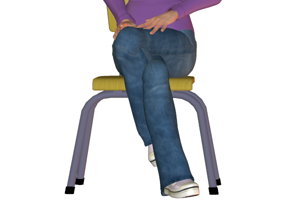

Bookmark added
-
crossed arms (folded arms)defensiveness, reluctanceArms crossed represent a defensive barrier. It could be due to animosity or due to not being interested. It can also be due to the person feeling cold.
-
crossed arms with clenched fistshostile defensivenessClenched fists inditcate hostility or stubbornness.
-
gripping own upper armsinsecurityGripping the upper arm while being folded is a feeling of self comfort. It is an attempt to re assure unhappy or unsafe feelings.
-
one arm across body clasping other arm by side (female)
 nervousnessWomen generally use this gesture usually indicating a barrier or for a sense of protection.
nervousnessWomen generally use this gesture usually indicating a barrier or for a sense of protection. -
palm(s) up, fingers pointing updefensive, instruction to stopAn authoritative instruction to stop whatever act promoted this gesture.
-
clenched fist(s)resistance, aggression, determinationClenched fists indicate different feelings. The person could feel defensive, offensive or negative.
-
steepled fingers pointing forward
 thoughtfulness and barrierThis gesture acts like a defensive barrier or defence for the person between him and the other person present.
thoughtfulness and barrierThis gesture acts like a defensive barrier or defence for the person between him and the other person present. -
crossed legs, sitting - generalcaution, disinterestCrossed legs indicate a feeling of disinterest and uncertainity. It can also indicate insecurity.
-
American or figure-4 leg crossindependent, stubbornThe figure 4 cross leg position is a confident posture to sit in. The crossed leg is like a protective barrier and so it also indicates some bit of stubborness.
-
American or figure-4 leg cross with hand clamp
 resistant, stubbornThis is a more protective version of just the plain American leg cross as the position of the person seems locked. This also reflects the mood of the person.
resistant, stubbornThis is a more protective version of just the plain American leg cross as the position of the person seems locked. This also reflects the mood of the person. -
ankle lock, sittingdefensivenessMore naturally seen in women, this suggests being defensive or a suggestion of suppressing negative emotion.
-
legs intertwined, sitting (female)insecurity or sexual posingThis kind of sitting position could either be a sign of defence or sexual display by women.
-
legs crossed, standing (scissor stance)insecurity or submission or engagementUsually this can be observed in someone standing in a group of people. It indicates lack of involvement and connection. If the arms are not crossed it can indicate a committed agreement to engage. This posture can indicate different things at different times.